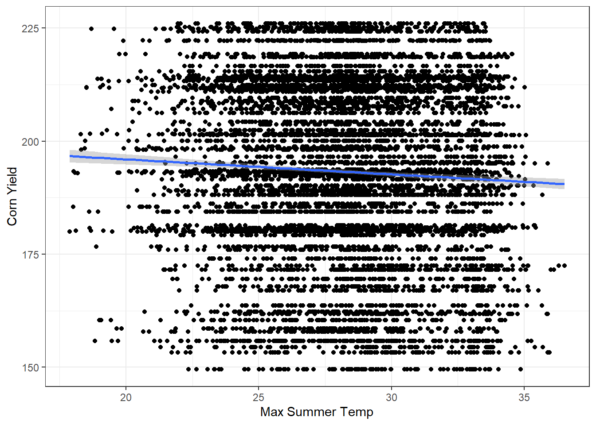
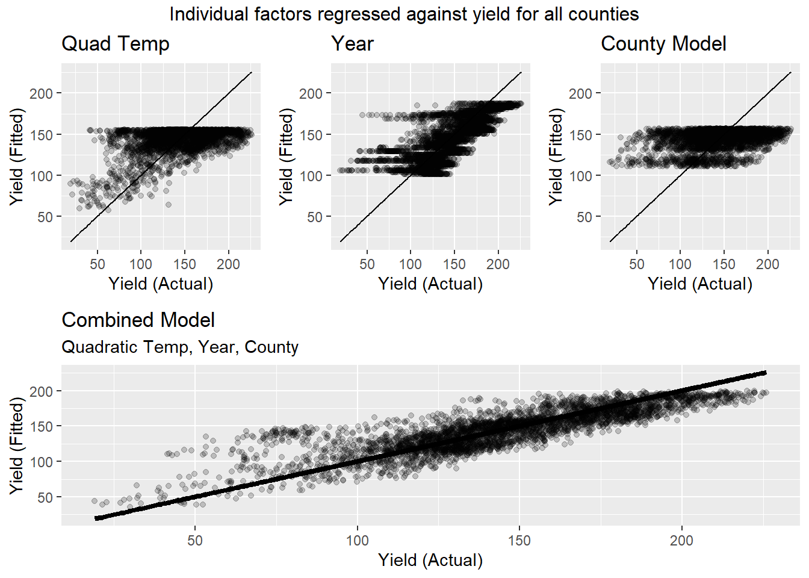

Chapter 6 Weather & Crop Regressions
6.1 Assignment
1a) Extract Winneshiek County corn yields, fit a linear time trend, make a plot. Is there a significant time trend?
#1a
WinneshiekCorn <- cornyields %>%
filter(county_name == "WINNESHIEK")
ggplot(WinneshiekCorn, mapping = aes(x = year, y = yield)) +
geom_point() +
theme_bw() +
labs(x = "Year", y = "Corn Yield") +
geom_smooth(method = lm)
WinCornLm <- lm(yield ~ year, WinneshiekCorn)
summary(WinCornLm)##
## Call:
## lm(formula = yield ~ year, data = WinneshiekCorn)
##
## Residuals:
## Min 1Q Median 3Q Max
## -57.767 -7.775 2.365 10.508 33.187
##
## Coefficients:
## Estimate Std. Error t value Pr(>|t|)
## (Intercept) -3469.0208 115.4526 -30.05 <2e-16 ***
## year 1.8088 0.0585 30.92 <2e-16 ***
## ---
## Signif. codes: 0 '***' 0.001 '**' 0.01 '*' 0.05 '.' 0.1 ' ' 1
##
## Residual standard error: 15.88 on 95 degrees of freedom
## Multiple R-squared: 0.9096, Adjusted R-squared: 0.9087
## F-statistic: 956.2 on 1 and 95 DF, p-value: < 2.2e-16-There is a very significant linear increase in corn yield with year. The linear model provides evidence, and the scatterplot visualizes the trend. ##
1b) Fit a quadratic time trend (i.e., year + year^2) and make a plot. Is there evidence for slowing yield growth?
#1b
WinneshiekCorn$yearsq <- WinneshiekCorn$year^2
lm_wincornquad <- lm(yield ~ year + yearsq, WinneshiekCorn)
summary(lm_wincornquad)##
## Call:
## lm(formula = yield ~ year + yearsq, data = WinneshiekCorn)
##
## Residuals:
## Min 1Q Median 3Q Max
## -50.608 -5.847 1.074 7.135 25.757
##
## Coefficients:
## Estimate Std. Error t value Pr(>|t|)
## (Intercept) 4.725e+04 7.546e+03 6.261 1.13e-08 ***
## year -4.960e+01 7.648e+00 -6.485 4.10e-09 ***
## yearsq 1.302e-02 1.938e-03 6.721 1.38e-09 ***
## ---
## Signif. codes: 0 '***' 0.001 '**' 0.01 '*' 0.05 '.' 0.1 ' ' 1
##
## Residual standard error: 13.12 on 94 degrees of freedom
## Multiple R-squared: 0.939, Adjusted R-squared: 0.9377
## F-statistic: 723 on 2 and 94 DF, p-value: < 2.2e-16WinneshiekCorn$fitted <- lm_wincornquad$fitted.values
ggplot(WinneshiekCorn) +
geom_point(mapping = aes(x = year, y = yield)) +
geom_line(mapping = aes(x = year, y = fitted)) +
theme_bw() +
labs(x = "Year", y = "Corn Yield")-The evidence seems to suggest that the corn yield is only growing, seemingly exponentially under the quadratic fit. ##
- Time Series: Let’s analyze the relationship between temperature and yields for the Winneshiek County time series. Use data on yield and summer avg Tmax. Is adding year or Tmax^2 to your model helpful? Make a plot and interpret the results.
WinTime = merge(WinneshiekCorn, winnesummer, by="year")
YieldTemplm=lm(yield~meantmax, WinTime)
summary(YieldTemplm)##
## Call:
## lm(formula = yield ~ meantmax, data = WinTime)
##
## Residuals:
## Min 1Q Median 3Q Max
## -71.96 -19.85 -3.19 24.64 61.72
##
## Coefficients:
## Estimate Std. Error t value Pr(>|t|)
## (Intercept) 275.876 118.335 2.331 0.0255 *
## meantmax -4.763 4.438 -1.073 0.2902
## ---
## Signif. codes: 0 '***' 0.001 '**' 0.01 '*' 0.05 '.' 0.1 ' ' 1
##
## Residual standard error: 32.88 on 36 degrees of freedom
## Multiple R-squared: 0.03101, Adjusted R-squared: 0.004098
## F-statistic: 1.152 on 1 and 36 DF, p-value: 0.2902ggplot(WinTime, mapping = aes(x = meantmax, y = yield)) +
geom_point() +
theme_bw() +
labs(x = "Average Summer Temp", y = "Corn Yield") +
geom_smooth(method = lm)
-Visually, there appears to be a negative correlation between average maximum temperature and yield, but the model does not provide strong evidence for such a relationship. Adding year to the model provides significant evidence for a relationship in that regard, but we are note exactly looking for that relationship here. ##
- Cross-Section: Analyze the relationship between temperature and yield across all counties in 2018. Is there a relationship? Interpret the results.
#Q3
rename(tmaxdf, "county_ansi" = "countyfp")## # A tibble: 1,376,892 x 4
## county_ansi doy year tmax
## <fct> <dbl> <dbl> <dbl>
## 1 93 1 1981 4.31
## 2 147 1 1981 1.88
## 3 13 1 1981 1.03
## 4 99 1 1981 3.99
## 5 195 1 1981 0.0337
## 6 67 1 1981 0.530
## 7 107 1 1981 4.24
## 8 15 1 1981 3.98
## 9 57 1 1981 2.52
## 10 127 1 1981 1.64
## # ... with 1,376,882 more rowsnames(tmaxdf)[names(tmaxdf)=="countyfp"] <- "county_ansi"
TempData2018 <- tmaxdf %>%
filter(doy >= 152 & doy <= 243) %>%
filter(year == "2018") %>%
group_by(county_ansi)
Data2018 <- cornyields %>%
filter(year == "2018")
TD2018 <- merge(TempData2018, Data2018, by="county_ansi")
lm2018 <- lm(yield~tmax, TD2018)
summary(lm2018)##
## Call:
## lm(formula = yield ~ tmax, data = TD2018)
##
## Residuals:
## Min 1Q Median 3Q Max
## -45.711 -13.558 0.488 17.677 34.474
##
## Coefficients:
## Estimate Std. Error t value Pr(>|t|)
## (Intercept) 202.6112 1.8754 108.035 < 2e-16 ***
## tmax -0.3309 0.0659 -5.022 5.23e-07 ***
## ---
## Signif. codes: 0 '***' 0.001 '**' 0.01 '*' 0.05 '.' 0.1 ' ' 1
##
## Residual standard error: 19.77 on 8554 degrees of freedom
## Multiple R-squared: 0.002939, Adjusted R-squared: 0.002823
## F-statistic: 25.22 on 1 and 8554 DF, p-value: 5.226e-07ggplot(TD2018, mapping = aes(x = tmax, y = yield)) +
geom_point() +
theme_bw() +
labs(x = "Max Summer Temp", y = "Corn Yield") +
geom_smooth(method = lm)
- These results appear to mimic the trend of the summer Winnishiek regression, which is minimal. There is a slight decreasing trend, but overall very little evidence of a trend at all. ##
- Panel: One way to leverage multiple time series is to group all data into what is called a “panel” regression. Convert the county ID code (“countyfp” or “county_ansi”) into factor using as.factor, then include this variable in a regression using all counties’ yield and summer temperature data. How does the significance of your temperature coefficients (Tmax, Tmax^2) change? Make a plot comparing actual and fitted yields and interpret the results of your model.
library(gridExtra)
#Q4
#Converting to factors
cornyields$county_ansi=as.factor(cornyields$county_ansi)
cornyields$county_name=as.factor(cornyields$county_name)
tmaxdf$county_ansi=as.factor(tmaxdf$county_ansi)
#Creating tmax and tmax^2 df
MaxTemps <- tmaxdf %>%
filter(doy >= 152 & doy <= 243) %>%
group_by(year, county_ansi) %>%
summarize(meantmax = mean(tmax))
MaxTemps$county_ansi=as.factor(MaxTemps$county_ansi)
#Creating master df
MaxTempYield = merge(MaxTemps, cornyields) %>%
mutate(yearsq=year^2,
yieldsq=yield^2,
tmaxsq=meantmax^2)
#Creating models for each factor
tempquadr = lm(yield~meantmax + tmaxsq, MaxTempYield)
summary(tempquadr)##
## Call:
## lm(formula = yield ~ meantmax + tmaxsq, data = MaxTempYield)
##
## Residuals:
## Min 1Q Median 3Q Max
## -113.151 -21.982 -2.794 24.860 82.006
##
## Coefficients:
## Estimate Std. Error t value Pr(>|t|)
## (Intercept) -2098.6219 139.4315 -15.05 <2e-16 ***
## meantmax 168.9590 9.9402 17.00 <2e-16 ***
## tmaxsq -3.1665 0.1769 -17.90 <2e-16 ***
## ---
## Signif. codes: 0 '***' 0.001 '**' 0.01 '*' 0.05 '.' 0.1 ' ' 1
##
## Residual standard error: 31.55 on 3745 degrees of freedom
## Multiple R-squared: 0.1947, Adjusted R-squared: 0.1943
## F-statistic: 452.8 on 2 and 3745 DF, p-value: < 2.2e-16MaxTempYield$tempsqfit <- tempquadr$fitted.values
yearlm = lm(yield~year, MaxTempYield)
summary(yearlm)##
## Call:
## lm(formula = yield ~ year, data = MaxTempYield)
##
## Residuals:
## Min 1Q Median 3Q Max
## -128.90 -10.56 4.87 16.68 45.17
##
## Coefficients:
## Estimate Std. Error t value Pr(>|t|)
## (Intercept) -4.508e+03 7.244e+01 -62.23 <2e-16 ***
## year 2.327e+00 3.623e-02 64.22 <2e-16 ***
## ---
## Signif. codes: 0 '***' 0.001 '**' 0.01 '*' 0.05 '.' 0.1 ' ' 1
##
## Residual standard error: 24.25 on 3746 degrees of freedom
## Multiple R-squared: 0.5241, Adjusted R-squared: 0.5239
## F-statistic: 4125 on 1 and 3746 DF, p-value: < 2.2e-16MaxTempYield$yearfit <- yearlm$fitted.values
countylm = lm(yield~county_name, MaxTempYield)
summary(countylm)##
## Call:
## lm(formula = yield ~ county_name, data = MaxTempYield)
##
## Residuals:
## Min 1Q Median 3Q Max
## -113.903 -20.766 -0.897 24.376 78.450
##
## Coefficients:
## Estimate Std. Error t value Pr(>|t|)
## (Intercept) 136.076 5.450 24.967 < 2e-16 ***
## county_nameADAMS -4.363 7.708 -0.566 0.57138
## county_nameALLAMAKEE 10.879 7.708 1.411 0.15821
## county_nameAPPANOOSE -20.117 7.760 -2.592 0.00957 **
## county_nameAUDUBON 8.829 7.708 1.145 0.25210
## county_nameBENTON 12.461 7.708 1.617 0.10605
## county_nameBLACK HAWK 14.071 7.708 1.826 0.06800 .
## county_nameBOONE 18.439 7.708 2.392 0.01679 *
## county_nameBREMER 18.711 7.708 2.427 0.01525 *
## county_nameBUCHANAN 15.166 7.708 1.968 0.04919 *
## county_nameBUENA VISTA 15.182 7.708 1.970 0.04896 *
## county_nameBUTLER 15.437 7.708 2.003 0.04528 *
## county_nameCALHOUN 16.118 7.708 2.091 0.03658 *
## county_nameCARROLL 13.984 7.708 1.814 0.06972 .
## county_nameCASS 6.453 7.708 0.837 0.40256
## county_nameCEDAR 20.400 7.708 2.647 0.00816 **
## county_nameCERRO GORDO 12.395 7.708 1.608 0.10791
## county_nameCHEROKEE 19.350 7.708 2.510 0.01210 *
## county_nameCHICKASAW 10.234 7.708 1.328 0.18434
## county_nameCLARKE -25.360 7.760 -3.268 0.00109 **
## county_nameCLAY 13.413 7.708 1.740 0.08191 .
## county_nameCLAYTON 16.545 7.708 2.146 0.03190 *
## county_nameCLINTON 15.534 7.708 2.015 0.04394 *
## county_nameCRAWFORD 11.332 7.708 1.470 0.14161
## county_nameDALLAS 11.895 7.708 1.543 0.12287
## county_nameDAVIS -19.690 7.760 -2.537 0.01121 *
## county_nameDECATUR -18.293 7.760 -2.357 0.01846 *
## county_nameDELAWARE 17.039 7.708 2.211 0.02712 *
## county_nameDES MOINES 9.116 7.708 1.183 0.23702
## county_nameDICKINSON 10.329 7.708 1.340 0.18031
## county_nameDUBUQUE 17.255 7.708 2.239 0.02524 *
## county_nameEMMET 15.329 7.708 1.989 0.04680 *
## county_nameFAYETTE 15.376 7.708 1.995 0.04613 *
## county_nameFLOYD 12.195 7.708 1.582 0.11371
## county_nameFRANKLIN 18.237 7.708 2.366 0.01803 *
## county_nameFREMONT 4.174 7.708 0.541 0.58821
## county_nameGREENE 16.595 7.708 2.153 0.03139 *
## county_nameGRUNDY 18.163 7.708 2.356 0.01850 *
## county_nameGUTHRIE 4.829 7.708 0.626 0.53103
## county_nameHAMILTON 18.137 7.708 2.353 0.01867 *
## county_nameHANCOCK 16.661 7.708 2.161 0.03072 *
## county_nameHARDIN 19.384 7.708 2.515 0.01195 *
## county_nameHARRISON 6.074 7.708 0.788 0.43076
## county_nameHENRY 3.134 7.708 0.407 0.68431
## county_nameHOWARD 9.113 7.708 1.182 0.23716
## county_nameHUMBOLDT 17.400 7.708 2.257 0.02404 *
## county_nameIDA 17.287 7.708 2.243 0.02497 *
## county_nameIOWA 9.826 7.708 1.275 0.20245
## county_nameJACKSON 5.045 7.708 0.654 0.51284
## county_nameJASPER 16.971 7.708 2.202 0.02774 *
## county_nameJEFFERSON -5.500 7.708 -0.714 0.47555
## county_nameJOHNSON 7.003 7.708 0.909 0.36367
## county_nameJONES 13.687 7.708 1.776 0.07587 .
## county_nameKEOKUK 1.571 7.708 0.204 0.83850
## county_nameKOSSUTH 19.966 7.708 2.590 0.00963 **
## county_nameLEE -3.897 7.708 -0.506 0.61314
## county_nameLINN 11.958 7.708 1.551 0.12089
## county_nameLOUISA 4.632 7.708 0.601 0.54795
## county_nameLUCAS -24.096 7.814 -3.084 0.00206 **
## county_nameLYON 14.111 7.708 1.831 0.06723 .
## county_nameMADISON -1.661 7.708 -0.215 0.82944
## county_nameMAHASKA 7.953 7.708 1.032 0.30225
## county_nameMARION 1.505 7.708 0.195 0.84518
## county_nameMARSHALL 19.950 7.708 2.588 0.00968 **
## county_nameMILLS 1.676 7.814 0.215 0.83014
## county_nameMITCHELL 15.366 7.708 1.994 0.04628 *
## county_nameMONONA -1.079 7.708 -0.140 0.88868
## county_nameMONROE -17.009 7.760 -2.192 0.02845 *
## county_nameMONTGOMERY 2.805 7.708 0.364 0.71592
## county_nameMUSCATINE 8.576 7.708 1.113 0.26592
## county_nameO BRIEN 20.734 7.708 2.690 0.00718 **
## county_nameOSCEOLA 16.287 7.708 2.113 0.03467 *
## county_namePAGE -3.671 7.708 -0.476 0.63391
## county_namePALO ALTO 14.274 7.708 1.852 0.06413 .
## county_namePLYMOUTH 10.266 7.708 1.332 0.18299
## county_namePOCAHONTAS 17.639 7.708 2.289 0.02216 *
## county_namePOLK 14.274 7.708 1.852 0.06413 .
## county_namePOTTAWATTAMIE 9.121 7.760 1.175 0.23990
## county_namePOWESHIEK 12.568 7.708 1.631 0.10306
## county_nameRINGGOLD -21.018 7.708 -2.727 0.00642 **
## county_nameSAC 15.192 7.708 1.971 0.04880 *
## county_nameSCOTT 20.321 7.708 2.636 0.00841 **
## county_nameSHELBY 11.426 7.708 1.482 0.13831
## county_nameSIOUX 19.626 7.708 2.546 0.01093 *
## county_nameSTORY 16.618 7.708 2.156 0.03115 *
## county_nameTAMA 15.155 7.708 1.966 0.04935 *
## county_nameTAYLOR -16.825 7.760 -2.168 0.03021 *
## county_nameUNION -12.060 7.760 -1.554 0.12023
## county_nameVAN BUREN -14.597 7.708 -1.894 0.05833 .
## county_nameWAPELLO -7.090 7.760 -0.914 0.36095
## county_nameWARREN -2.482 7.708 -0.322 0.74751
## county_nameWASHINGTON 8.547 7.708 1.109 0.26754
## county_nameWAYNE -22.703 7.760 -2.926 0.00346 **
## county_nameWEBSTER 20.197 7.708 2.620 0.00882 **
## county_nameWINNEBAGO 16.334 7.708 2.119 0.03414 *
## county_nameWINNESHIEK 12.905 7.708 1.674 0.09416 .
## county_nameWOODBURY 4.774 7.708 0.619 0.53574
## county_nameWORTH 14.189 7.708 1.841 0.06572 .
## county_nameWRIGHT 18.379 7.708 2.384 0.01716 *
## ---
## Signif. codes: 0 '***' 0.001 '**' 0.01 '*' 0.05 '.' 0.1 ' ' 1
##
## Residual standard error: 33.6 on 3649 degrees of freedom
## Multiple R-squared: 0.1104, Adjusted R-squared: 0.08648
## F-statistic: 4.62 on 98 and 3649 DF, p-value: < 2.2e-16MaxTempYield$countyfit <- countylm$fitted.values
allquadr = lm(yield ~ year + meantmax + tmaxsq + county_name, MaxTempYield)
summary(allquadr)##
## Call:
## lm(formula = yield ~ year + meantmax + tmaxsq + county_name,
## data = MaxTempYield)
##
## Residuals:
## Min 1Q Median 3Q Max
## -81.645 -9.720 1.924 13.232 40.409
##
## Coefficients:
## Estimate Std. Error t value Pr(>|t|)
## (Intercept) -5.826e+03 9.804e+01 -59.431 < 2e-16 ***
## year 2.203e+00 2.836e-02 77.664 < 2e-16 ***
## meantmax 1.182e+02 6.108e+00 19.352 < 2e-16 ***
## tmaxsq -2.225e+00 1.085e-01 -20.503 < 2e-16 ***
## county_nameADAMS -4.527e+00 4.321e+00 -1.048 0.294839
## county_nameALLAMAKEE 2.716e+00 4.343e+00 0.625 0.531743
## county_nameAPPANOOSE -1.828e+01 4.350e+00 -4.203 2.70e-05 ***
## county_nameAUDUBON 5.068e+00 4.323e+00 1.172 0.241144
## county_nameBENTON 7.186e+00 4.325e+00 1.661 0.096732 .
## county_nameBLACK HAWK 7.289e+00 4.329e+00 1.684 0.092303 .
## county_nameBOONE 1.498e+01 4.323e+00 3.466 0.000534 ***
## county_nameBREMER 1.133e+01 4.332e+00 2.615 0.008966 **
## county_nameBUCHANAN 7.651e+00 4.334e+00 1.765 0.077577 .
## county_nameBUENA VISTA 8.640e+00 4.328e+00 1.996 0.045974 *
## county_nameBUTLER 9.089e+00 4.327e+00 2.100 0.035779 *
## county_nameCALHOUN 1.039e+01 4.326e+00 2.401 0.016400 *
## county_nameCARROLL 9.666e+00 4.323e+00 2.236 0.025421 *
## county_nameCASS 6.145e+00 4.321e+00 1.422 0.155092
## county_nameCEDAR 1.579e+01 4.324e+00 3.651 0.000264 ***
## county_nameCERRO GORDO 4.582e+00 4.338e+00 1.056 0.290980
## county_nameCHEROKEE 1.390e+01 4.325e+00 3.213 0.001325 **
## county_nameCHICKASAW 2.169e+00 4.341e+00 0.500 0.617274
## county_nameCLARKE -2.404e+01 4.350e+00 -5.527 3.48e-08 ***
## county_nameCLAY 6.611e+00 4.329e+00 1.527 0.126809
## county_nameCLAYTON 8.864e+00 4.337e+00 2.044 0.041033 *
## county_nameCLINTON 1.055e+01 4.325e+00 2.439 0.014756 *
## county_nameCRAWFORD 6.528e+00 4.324e+00 1.510 0.131221
## county_nameDALLAS 1.081e+01 4.321e+00 2.502 0.012386 *
## county_nameDAVIS -1.457e+01 4.352e+00 -3.349 0.000820 ***
## county_nameDECATUR -1.603e+01 4.350e+00 -3.686 0.000232 ***
## county_nameDELAWARE 9.423e+00 4.338e+00 2.172 0.029916 *
## county_nameDES MOINES 1.050e+01 4.321e+00 2.429 0.015186 *
## county_nameDICKINSON 2.906e+00 4.336e+00 0.670 0.502836
## county_nameDUBUQUE 9.795e+00 4.340e+00 2.257 0.024059 *
## county_nameEMMET 7.232e+00 4.340e+00 1.666 0.095754 .
## county_nameFAYETTE 7.319e+00 4.341e+00 1.686 0.091905 .
## county_nameFLOYD 4.791e+00 4.334e+00 1.106 0.269008
## county_nameFRANKLIN 1.131e+01 4.330e+00 2.612 0.009035 **
## county_nameFREMONT 1.358e+01 4.330e+00 3.136 0.001726 **
## county_nameGREENE 1.462e+01 4.321e+00 3.382 0.000727 ***
## county_nameGRUNDY 1.151e+01 4.328e+00 2.659 0.007863 **
## county_nameGUTHRIE 3.379e+00 4.321e+00 0.782 0.434297
## county_nameHAMILTON 1.315e+01 4.324e+00 3.042 0.002370 **
## county_nameHANCOCK 8.706e+00 4.340e+00 2.006 0.044917 *
## county_nameHARDIN 1.395e+01 4.326e+00 3.225 0.001271 **
## county_nameHARRISON 6.891e+00 4.321e+00 1.595 0.110834
## county_nameHENRY 5.280e+00 4.321e+00 1.222 0.221864
## county_nameHOWARD 9.433e-01 4.364e+00 0.216 0.828875
## county_nameHUMBOLDT 9.881e+00 4.334e+00 2.280 0.022661 *
## county_nameIDA 1.186e+01 4.325e+00 2.743 0.006124 **
## county_nameIOWA 7.214e+00 4.322e+00 1.669 0.095161 .
## county_nameJACKSON -1.386e+00 4.330e+00 -0.320 0.748823
## county_nameJASPER 1.440e+01 4.322e+00 3.332 0.000871 ***
## county_nameJEFFERSON 5.352e-01 4.325e+00 0.124 0.901510
## county_nameJOHNSON 4.380e+00 4.322e+00 1.013 0.310971
## county_nameJONES 7.730e+00 4.328e+00 1.786 0.074158 .
## county_nameKEOKUK 2.203e+00 4.321e+00 0.510 0.610224
## county_nameKOSSUTH 1.222e+01 4.335e+00 2.819 0.004839 **
## county_nameLEE 1.779e+00 4.324e+00 0.411 0.680740
## county_nameLINN 6.415e+00 4.326e+00 1.483 0.138218
## county_nameLOUISA 7.330e+00 4.322e+00 1.696 0.089966 .
## county_nameLUCAS -2.168e+01 4.381e+00 -4.949 7.81e-07 ***
## county_nameLYON 9.328e+00 4.325e+00 2.157 0.031063 *
## county_nameMADISON -2.587e+00 4.321e+00 -0.599 0.549390
## county_nameMAHASKA 8.152e+00 4.321e+00 1.887 0.059302 .
## county_nameMARION 1.919e+00 4.321e+00 0.444 0.656948
## county_nameMARSHALL 1.418e+01 4.326e+00 3.278 0.001055 **
## county_nameMILLS 1.023e+01 4.385e+00 2.332 0.019741 *
## county_nameMITCHELL 7.285e+00 4.352e+00 1.674 0.094242 .
## county_nameMONONA 7.987e-01 4.321e+00 0.185 0.853378
## county_nameMONROE -1.585e+01 4.350e+00 -3.643 0.000273 ***
## county_nameMONTGOMERY 5.885e+00 4.322e+00 1.362 0.173381
## county_nameMUSCATINE 8.283e+00 4.321e+00 1.917 0.055337 .
## county_nameO BRIEN 1.423e+01 4.328e+00 3.288 0.001018 **
## county_nameOSCEOLA 8.743e+00 4.337e+00 2.016 0.043890 *
## county_namePAGE -3.674e-01 4.322e+00 -0.085 0.932261
## county_namePALO ALTO 7.261e+00 4.330e+00 1.677 0.093601 .
## county_namePLYMOUTH 7.352e+00 4.322e+00 1.701 0.089007 .
## county_namePOCAHONTAS 1.150e+01 4.326e+00 2.659 0.007880 **
## county_namePOLK 1.403e+01 4.321e+00 3.247 0.001178 **
## county_namePOTTAWATTAMIE 1.127e+01 4.350e+00 2.590 0.009627 **
## county_namePOWESHIEK 1.055e+01 4.322e+00 2.441 0.014702 *
## county_nameRINGGOLD -2.070e+01 4.321e+00 -4.792 1.72e-06 ***
## county_nameSAC 9.390e+00 4.326e+00 2.170 0.030050 *
## county_nameSCOTT 1.628e+01 4.323e+00 3.765 0.000169 ***
## county_nameSHELBY 7.673e+00 4.323e+00 1.775 0.075966 .
## county_nameSIOUX 1.558e+01 4.323e+00 3.603 0.000318 ***
## county_nameSTORY 1.122e+01 4.325e+00 2.593 0.009543 **
## county_nameTAMA 9.740e+00 4.325e+00 2.252 0.024387 *
## county_nameTAYLOR -1.404e+01 4.350e+00 -3.228 0.001256 **
## county_nameUNION -1.155e+01 4.350e+00 -2.655 0.007967 **
## county_nameVAN BUREN -5.278e+00 4.329e+00 -1.219 0.222881
## county_nameWAPELLO -3.220e+00 4.351e+00 -0.740 0.459267
## county_nameWARREN -2.159e+00 4.321e+00 -0.500 0.617309
## county_nameWASHINGTON 1.042e+01 4.321e+00 2.410 0.015981 *
## county_nameWAYNE -2.189e+01 4.350e+00 -5.033 5.07e-07 ***
## county_nameWEBSTER 1.421e+01 4.326e+00 3.285 0.001029 **
## county_nameWINNEBAGO 8.236e+00 4.344e+00 1.896 0.058035 .
## county_nameWINNESHIEK 4.567e+00 4.350e+00 1.050 0.293826
## county_nameWOODBURY 2.799e+00 4.321e+00 0.648 0.517252
## county_nameWORTH 6.123e+00 4.356e+00 1.406 0.159892
## county_nameWRIGHT 1.156e+01 4.329e+00 2.669 0.007634 **
## ---
## Signif. codes: 0 '***' 0.001 '**' 0.01 '*' 0.05 '.' 0.1 ' ' 1
##
## Residual standard error: 18.83 on 3646 degrees of freedom
## Multiple R-squared: 0.7207, Adjusted R-squared: 0.7129
## F-statistic: 93.13 on 101 and 3646 DF, p-value: < 2.2e-16MaxTempYield$allfit <- allquadr$fitted.values
summary(MaxTempYield)## year county_ansi meantmax county_name
## Min. :1981 93 : 38 Min. :23.82 ADAIR : 38
## 1st Qu.:1990 147 : 38 1st Qu.:26.97 ADAMS : 38
## Median :1999 13 : 38 Median :27.86 ALLAMAKEE : 38
## Mean :1999 99 : 38 Mean :27.90 AUDUBON : 38
## 3rd Qu.:2009 195 : 38 3rd Qu.:28.82 BENTON : 38
## Max. :2018 67 : 38 Max. :32.24 BLACK HAWK: 38
## (Other):3520 (Other) :3520
## yield yearsq yieldsq tmaxsq
## Min. : 19.1 Min. :3924361 Min. : 364.8 Min. : 567.5
## 1st Qu.:123.2 1st Qu.:3960100 1st Qu.:15178.2 1st Qu.: 727.3
## Median :143.6 Median :3996001 Median :20621.0 Median : 776.0
## Mean :144.2 Mean :3997861 Mean :22018.6 Mean : 780.4
## 3rd Qu.:170.3 3rd Qu.:4036081 3rd Qu.:29010.6 3rd Qu.: 830.7
## Max. :226.0 Max. :4072324 Max. :51076.0 Max. :1039.4
##
## tempsqfit yearfit countyfit allfit
## Min. : 57.32 Min. :101.3 Min. :110.7 Min. : 35.87
## 1st Qu.:140.36 1st Qu.:122.2 1st Qu.:140.0 1st Qu.:123.79
## Median :149.94 Median :143.2 Median :148.3 Median :146.33
## Mean :144.16 Mean :144.2 Mean :144.2 Mean :144.16
## 3rd Qu.:153.89 3rd Qu.:166.4 3rd Qu.:152.6 3rd Qu.:165.86
## Max. :155.23 Max. :187.4 Max. :156.8 Max. :199.65
## #Creating visuals'
grid.arrange(
top = "Individual factors regressed against yield for all counties",
layout_matrix = rbind(c(1, 2, 3),c(4, 4, 4)),
ggplot(MaxTempYield) +
geom_point(mapping = aes(x = yield, y = tempsqfit), alpha = 0.2) +
geom_line(mapping = aes(x = yield, y = yield), linetype = "solid", size=0.5) +
labs(x = "Yield (Actual)", y = "Yield (Fitted)", title= "Quad Temp",) +
theme_gray()
,
ggplot(MaxTempYield) +
geom_point(mapping = aes(x = yield, y = yearfit), alpha = 0.2) +
geom_line(mapping = aes(x = yield, y = yield), linetype = "solid", size=0.5) +
labs(x = "Yield (Actual)", y = "Yield (Fitted)", title= "Year") +
theme_gray()
,
ggplot(MaxTempYield) +
geom_point(mapping = aes(x = yield, y = countyfit), alpha = 0.2) +
geom_line(mapping = aes(x = yield, y = yield), linetype = "solid", size=0.5) +
labs(x = "Yield (Actual)", y = "Yield (Fitted)", title= "County Model") +
theme_gray()
,
ggplot(MaxTempYield) +
geom_point(mapping = aes(x = yield, y = allfit), alpha = 0.2) +
geom_line(mapping = aes(x = yield, y = yield), linetype = "solid", size=1.5) +
labs(x = "Yield (Actual)", y = "Yield (Fitted)", title= "Combined Model", subtitle="Quadratic Temp, Year, County") +
theme_gray()
)
- The fit of years to yield (although not quadratic) provides the best fit to explain the correlation. The temperature and county models have very limited predictive power (though the temperature model is better than the county model). The combined model creates the best prediction visually. ##
- Soybeans: Download NASS data on soybean yields and explore either a time series relationship for a given county, the cross-sectional relationship for a given year, or a panel across all counties and years.
soyyield$county_ansi <- as.numeric(soyyield$county_ansi)
soyyield$yield <- as.numeric(soyyield$Value)
# clean and filter this dataset
soyyields <- select(soyyield, county_ansi, county_name, yield, year) %>%
filter(!is.na(county_ansi) & !is.na(yield))
soyyields <- tibble(soyyields)
#Subsetting a single county
CherokeeSoy <- soyyields %>%
filter(county_name == "CHEROKEE")
ggplot(CherokeeSoy, mapping = aes(x = year, y = yield)) +
geom_point() +
theme_bw() +
labs(x = "Year", y = "Soy Yield") +
geom_smooth(method = lm)
CherSoyLm <- lm(yield ~ year, CherokeeSoy)
summary(CherSoyLm)##
## Call:
## lm(formula = yield ~ year, data = CherokeeSoy)
##
## Residuals:
## Min 1Q Median 3Q Max
## -11.4563 -2.2537 0.5595 2.5287 10.4577
##
## Coefficients:
## Estimate Std. Error t value Pr(>|t|)
## (Intercept) -1.117e+03 1.203e+02 -9.291 2.53e-11 ***
## year 5.835e-01 6.011e-02 9.707 7.74e-12 ***
## ---
## Signif. codes: 0 '***' 0.001 '**' 0.01 '*' 0.05 '.' 0.1 ' ' 1
##
## Residual standard error: 4.389 on 38 degrees of freedom
## Multiple R-squared: 0.7126, Adjusted R-squared: 0.7051
## F-statistic: 94.23 on 1 and 38 DF, p-value: 7.743e-12-There is a very evident positive correlation between time and soy yield in Cherokee county, which is supported by the linear model as well.